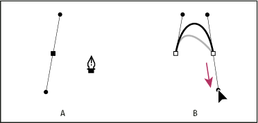
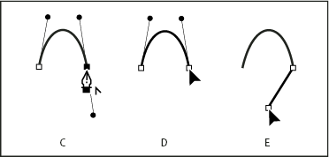

TOPIC APPEARS IN:


Draw curves followed by straight lines
- Using the Pen tool, drag to create the first smooth point of the curved segment, and release the mouse button.
- Reposition the Pen tool where you want the curved segment
to end, drag to complete the curve, and release the mouse button.

Drawing a curved segment followed by a straight segment (part 1)
- A.
- First smooth point of curved segment completed and Pen tool positioned over endpoint
- B.
- Dragging to complete the curve
- Position the Pen tool over the selected endpoint. A convert-point icon appears next to the Pen tool when it is positioned correctly. Click the anchor point to convert the smooth point to a corner point.
- Reposition the Pen tool where you want the straight segment
to end, and click to complete the straight segment.

Drawing a curved segment followed by a straight segment (part 2)
- C.
- Positioning Pen tool over existing endpoint
- D.
- Clicking endpoint
- E.
- Clicking next corner point